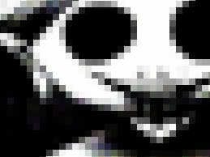
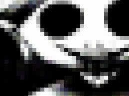

BEN Drowned or Haunted Majora's Mask is a well-known creepypasta (and later, an alternate reality game) created by Alex Hall, also known as "Jadusable".
The story revolves around a Majora's Mask cartridge that is haunted by the ghost (if it is a ghost) of a boy named Ben.
 
